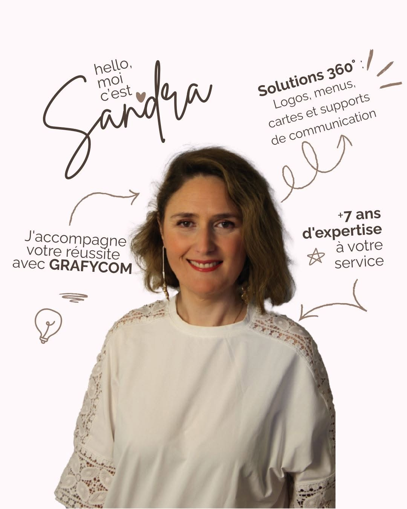

+7 ans d'expertise
Une expérience construite sur des projets réels, des contraintes d'impression réelles et des budgets réels.
Infographiste et chef de projet à Perpignan. J'accompagne votre réussite avec Grafycom : plus de sept ans d'expertise à votre service, pour une image qui vous ressemble vraiment.

Parce qu'il y a un écart, souvent, entre la qualité de ce que font les gens et l'image qu'ils en donnent. Un artisan irréprochable dont la camionnette porte un lettrage fait à la va-vite. Un restaurant qui cuisine merveilleusement et dont la carte est tapée dans un traitement de texte. Une association pleine d'énergie dont l'affiche se perd sur le mur.
Ce décalage coûte cher, et il est invisible : ce sont les clients qui ne poussent pas la porte. Mon métier consiste à le refermer.
Le logo de Grafycom n'a pas été choisi au hasard. Le colibri est le plus petit des oiseaux et l'un des plus précis : il tient en vol immobile, le temps qu'il faut, pour aller chercher exactement ce dont il a besoin. C'est une bonne image de ce travail — un studio à taille humaine, attentif au détail, qui se pose le temps de comprendre avant d'agir.
Et l'aquarelle qui l'entoure dit le reste : la couleur, le mouvement, et l'idée qu'aucune identité ne ressemble à la précédente.
La double casquette n'est pas un argument commercial, c'est une nécessité de terrain. Concevoir un beau visuel ne sert à rien s'il arrive trop tard, s'il est mal imprimé, ou si le poseur découvre le jour J que les dimensions ne correspondent pas.
Sur les projets qui font intervenir plusieurs prestataires, je tiens le fil : planning, consultation des imprimeurs, vérification des bons à tirer, contrôle à la réception. Vous avez un seul interlocuteur, du premier crayonné à la pose.
Bienveillant, ce n'est pas un mot de brochure. Concrètement : personne ne devrait se sentir bête parce qu'il ne connaît pas la différence entre RVB et CMJN. Je n'utilise pas de vocabulaire technique sans l'expliquer, je ne vends pas ce qui n'est pas utile, et je dis quand un besoin ne relève pas de mon métier.
Bilingue, c'est pratique dans les Pyrénées-Orientales : l'accompagnement et les supports se font en français comme en espagnol, pour les entreprises transfrontalières comme pour celles qui accueillent une clientèle espagnole ou catalane une bonne partie de l'année.
Installée à Perpignan, je me déplace dans tout le département : Canet-en-Roussillon, Saint-Cyprien, Argelès-sur-Mer, Collioure, Céret, Thuir, Prades, Le Barcarès, Leucate… Pour les projets plus lointains, la visio et le partage de fichiers fonctionnent très bien — une partie de mes clients ne m'a jamais rencontrée en personne, et cela ne change rien au résultat.
Une expérience construite sur des projets réels, des contraintes d'impression réelles et des budgets réels.
Un seul interlocuteur, du premier échange à la pose. Pas de jargon, pas de mauvaise surprise sur la facture.
Pas de gabarit acheté sur une banque d'images : chaque création part de votre histoire et de vos clients.
Le premier échange est gratuit et sans engagement. Trente minutes suffisent souvent à y voir clair sur ce dont votre image a besoin.